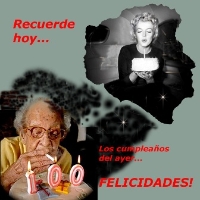
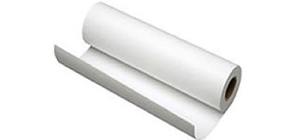
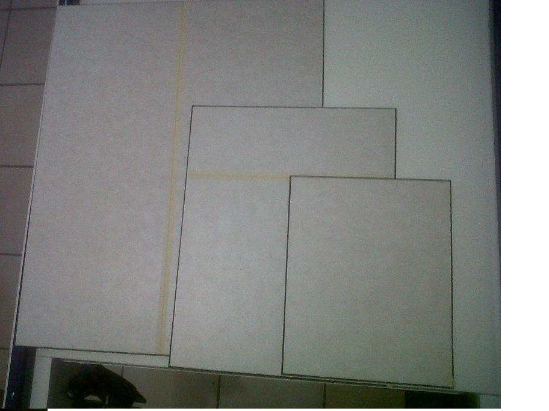
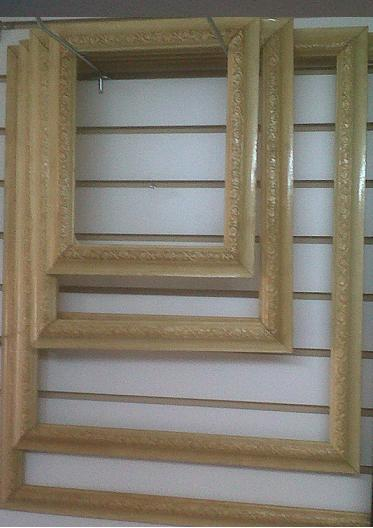

efc estudio fotográfico cahuantzi
Bienvenido al sitio efc:
Le ofrecemos nuestros servicios de fotografía de identificación:
En papel lustre o mate de acuerdo al requerimiento de sus trámites particulares.
También le ofrecemos ampliación de fotografías en los tradicionales tamaños (8"X10", 11"X14", 16"X20" y 20"X24"), presente su fotografía para determinar el tamaño optimo de ampliación sin perder significativamente su definición.
Restauración digital fotográfica, restauración de fotografías maltratadas recientes o antiguas lo mas fiel de acuerdo a su estado presentado.
Montaje digital fotográfico, se cambian fondos panorámicos con escenarios, locales, nacionales o internacionales.
Manipulación de imágenes, se corrigen, incluyen u omiten personas de la fotografía que presente.
Se toman eventos sociales: bautizos, confirmaciones, primeras comuniones, XV años, bodas, graduaciones, etc.
Disfrute usted y todos los suyos de su evento, no se pierda nada por andar tomando fotos o video, nosotros capturamos sus mejores momentos, llámenos, visítenos y nosotros agendamos su evento.
Se toman fotografías de grupo , familiares, laborales, escolares, amigos, etc.
De un evento se entrega álbum fotográfico y CD o DVD con las fotografías del evento, también puede solicitar la presentación en PHOTOBOOK.
Tomamos sesiones para fotoclips, embarazo, bebés, nuevos papás, glamour o fashion.
Separe su cita y traiga su vestuario ad hoc.
Texturizado
El texturizado se recomienda para dar protección a su fotografía principalmente contra desgaste, raspaduras, humedad y para mayor duración. Se aplica una película de textura directamente sobre su fotografía, con esto ya no se requiere vidrio si se desea enmarcar.

Montado
El montado se recomienda para dar rigidézy protección a su fotografía contra dobleces para poder colocarla directamente en su marco. Se utilizan hojas de macoglassin o mdf a la medida, con esto ya se puede enmarcar si se desea.

Enmarcado
El enmarcado recomendable para lucir en el lugar de alguna pared que desee dentro de su casa, sus fotografías en el marco con la moldura de su elección.


¡Trabajando para USTED!